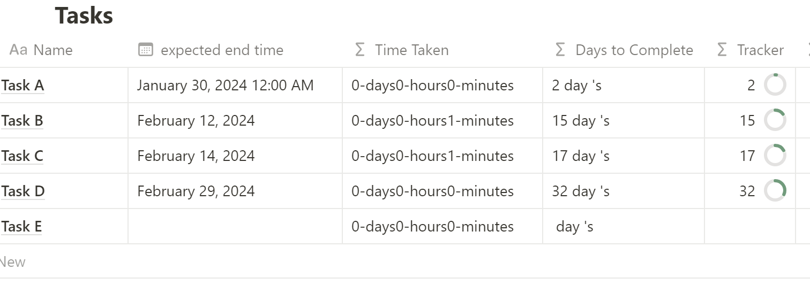

Notion Template on Time Sheeet
Time Sheets
Create your daily schedules and keep a track on them using this amazing template which tracks your tasks and gives you the status and the overall idea of how you are completing your tasks.
Follow up your daily tasks and keep record of the things you perform and manage your timings.. 🙂
- Add the task name
- Enter the expected date time.
- Add the task name in the the Start Time and Stop Time.
- After entering the tasks select the checkbox to calculate the time sheet.


Easy to use
- Create tasks and enter them.
- Give the task name in the task section
- Enter the estimated time required for the task to be completed
- After entering the estimated time then move on to Start Time
- After completion of the task come on to the End Time secrtion and select against the task.
- This will calcualate the progress and the time taken for the tasks